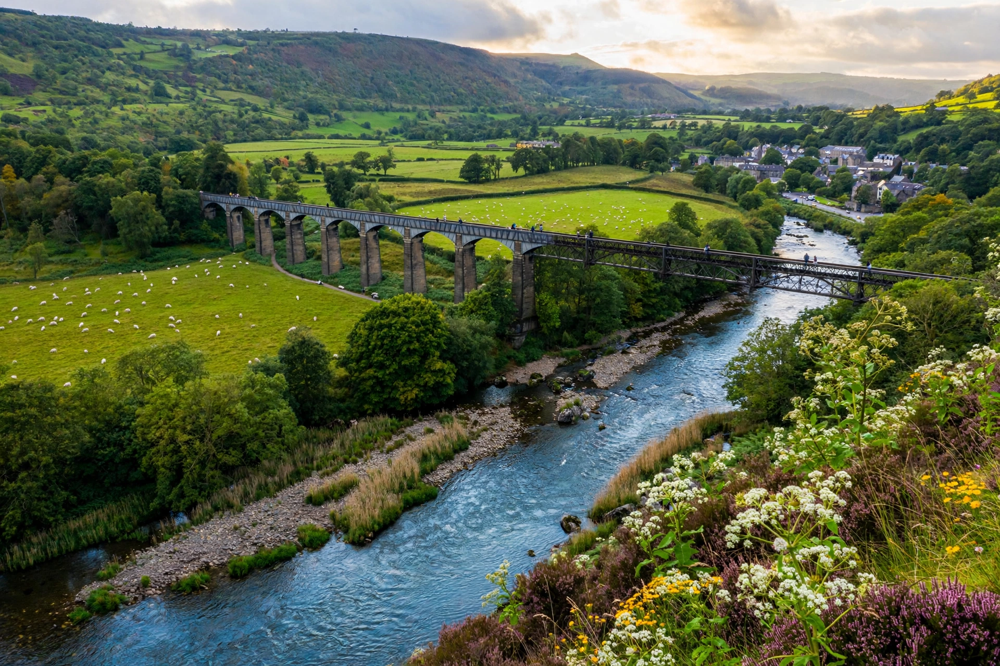

The River Dee (Welsh: Afon Dyfrdwy, Latin: Flumen Deva) is a river in the United Kingdom. It flows through parts of both Wales and England, forming part of the border between the two countries.

The river rises in the mountains of Snowdonia (Eryri) in north Wales, flows through Llyn Tegid (Bala Lake), and passes Corwen, Llangollen — where Thomas Telford's Pontcysyllte Aqueduct carries the Llangollen Canal over its valley — and then through Chester, where it once formed a major port. Below Chester a canalised section leads to the tidal Dee Estuary between Wales and the Wirral.
The Romans built their fortress of Deva (Chester) on its banks. The Dee is celebrated for salmon fishing, supplies drinking water regulated by reservoirs such as Llyn Celyn and Llyn Brenig, and supports the Pontcysyllte Aqueduct and Canal World Heritage Site. It is a Site of Special Scientific Interest and Special Area of Conservation.